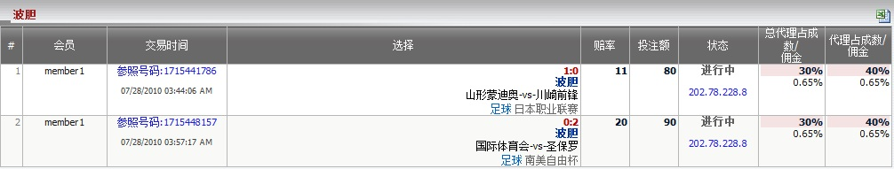

波胆
定义:
显示总代理基于注单占成数的输赢数额, 投注类型之: 波胆。 这份报告分开每场交易, 并包含交易的所有详细资料。

图 1.1
- 从上图中, 我们能够知道从属该总代理的所有会员的注单详情, 如下:
- 第一投注: 会员账号 "member1", 参照号码: 1715441786, 交易日期: 07/28/2010, 投注类型: 波胆, 比分: 1-0, 赛事: 山形蒙迪奥 -vs- 川崎前锋, 联赛: 日本职业联赛, 赔率 = 11, 投注额 = 80, 总代理占成 = 30%, 总代理佣金 = 0.65%, 代理占成 = 40%, 代理佣金 = 0.65%。
- 第二投注: 会员账号 "member1", 参照号码: 1715448157, 交易日期: 07/28/2010, 投注类型: 波胆, 比分: 0-2, 赛事: 国际体育会 -vs- 圣保罗, 联赛: 南美自由杯, 赔率 = 20, 投注額 = 90, 总代理占成 = 30%, 总代理佣金 = 0.65%, 代理占成 = 40%, 代理佣金 = 0.65%。